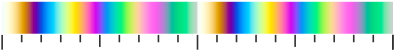

干渉色標高図 作成ツール
標高値に応じてシャボン玉の虹色(干渉色)で着色された起伏が見やすい地図を作れます。 青いボタンを押すと地図が虹色に変わり赤い全画面ボタンで広い地図が開きます。 小さい数字(色周期)のボタンにすると、ゆるやかな起伏があぶり出されます。 下のスライダーで数値を変えた後には紫色の描画ボタンを押すと再描画できます。
標高(m)
色周期___ 高___ 低____ 基_ 階__ #8/35.715370/139.840268 総___
地理院地図のURLが長すぎてSNSで共有が出来ない場合は、下記の方法をお試しください
- 地理院地図のURLをコピーして下の窓に貼りつける
総色階調1013
※約1300以上はErrorになります
Errorの場合、最高(m)を1/4～1/2に減らして描画し総色階調1300以下でお試しください - 「URL短縮」を押して、別窓に表示されるURLをコピーする
- コピーしたURLをSNSの記事に貼付ける
くわしい使い方
設定値を変更して「描画」ボタンを押すと再描画します。「全画面」ボタンで地理院地図webが開きます。詳細は下記の通りです
- 干渉色標高図ではカラースケールとして、シャボン玉に見られるような薄膜光干渉による「1次の白色」から「3次の緑色」までのカラーグラデーションを周期的に繰返して使っています
- 色周期：小さくすると細かい凸凹が可視化できます(推奨最小値25)。色周期とは、同じ色が次に現れるまでの標高差のことです。
- 倍率緯度経度：拡大縮小移動用。地理院地図のURLのzoom倍率(#XX)と緯度経度を、間の「/」も含めて貼付けると、倍率・緯度・経度を変更できます。全世界対応で、南極まで見れます
- 変換貼付：貼付け用便利ツール。地理院地図URLを貼付けた後、このボタンを押すと倍率緯度経度が自動的に貼りつきます
- 最高：着色したい最高の標高を入力します。それ以上は同じ色になります
- 最低：着色したい最低の標高を入力します。それ以下は同じ色になります
- 基準高：色をシフトするのに使います。入力した標高が1次の白色で着色され、着色の基準の標高になります
- 階調数：25(推奨値)に固定でほぼOK。25以下にすると「アートな地図」が作れます。この値はカラースケールが一周するまでの色の段階数です。地理院地図の自分で作る色別標高図のグラデーション設定がON(デフォルト)のときは、25以上にしても肉眼で差は分からないと思います
- 総色階調：最低標高から最高標高までに使われているの色の段階数。約1300階調までURL短縮可で、約650階調まで地理院地図3Dで描画時にエラーが出ないようです
干渉色カラースケール
 画像クリックで拡大
画像クリックで拡大
比較用Googleマップ
(同じ場所の地図を表示しています)報告されているバグなど
- 地図内を移動した後に「描画更新」ボタンを押すと、表示場所が動いてしまう仕様になっています
- 2つの地図と倍率緯度経度の設定値は連動しない仕様になっています
- いずれも使いづらくて申し訳ござません。改善方法をご存知でしたら教えていただけると嬉しいです ⇒ こちら
- 標高設定の正確性は検証できておりません、「地図アート」のツールとしてお使いください
- 通信状況などにより動作が重くなる場合がございます、予めご了承ください
- バグなどを発見されましたら、お知らせいただけると幸いです ⇒ こちら
小数刻みの干渉色標高図用
◆「配色ファイル」生成ツール ⇒ download(Excelファイル)